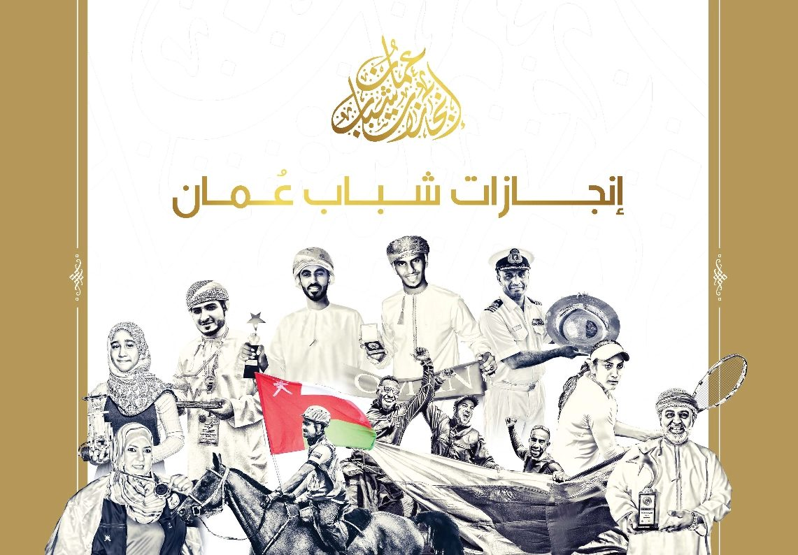
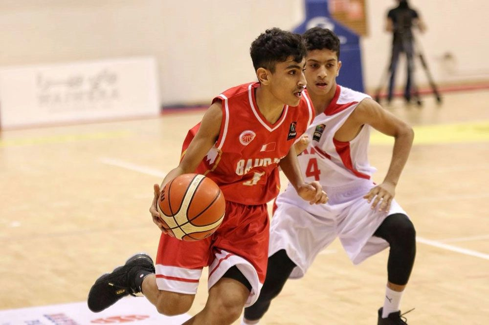
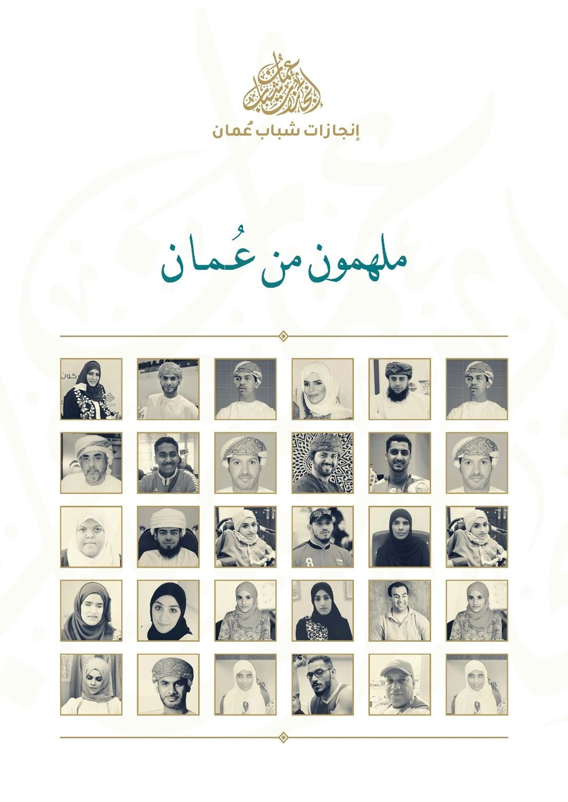

مقال العدد · رأي
ما الذي يبقى بعد انتهاء التصفيق؟
الإنجاز لا يكتمل بلحظة التتويج. يبقى حين يجد طريقه إلى الناس: مهارة تُعلَّم، أو باب يُفتح لمن يأتي بعد.
بدر العلويكاتب ضيف٦دقائق
 نوفمبر ٢٠٢٦
نوفمبر ٢٠٢٦مجلة إنجازات
أقلامٌ شابة تكتب عن الأثر، لا عن اللقب.
مقال العدد · رأي
الإنجاز لا يكتمل بلحظة التتويج. يبقى حين يجد طريقه إلى الناس: مهارة تُعلَّم، أو باب يُفتح لمن يأتي بعد.
الإنجاز لا يكتمل بلحظة التتويج، بل حين يفتح باباً لمن يأتي بعده.— بدر العلوي، من «ما الذي يبقى بعد انتهاء التصفيق؟»
كل المقالات
رأي · ٤ دقائق
ليلى الرحبي

علوم · ٧ دقائق
مريم البلوشية

رياضة · ٥ دقائق
خالد المعمري
قصص ملهمة · ٤ دقائق
هدى الشكيلية

ثقافة · ٥ دقائق
سامي الحارثي

علوم · ٦ دقائق
يوسف الهنائي
ثقافة · ٣ دقائق
عائشة الكندية
لا توجد مقالات مطابقة.
الأكثر قراءةأقلام إنجازات